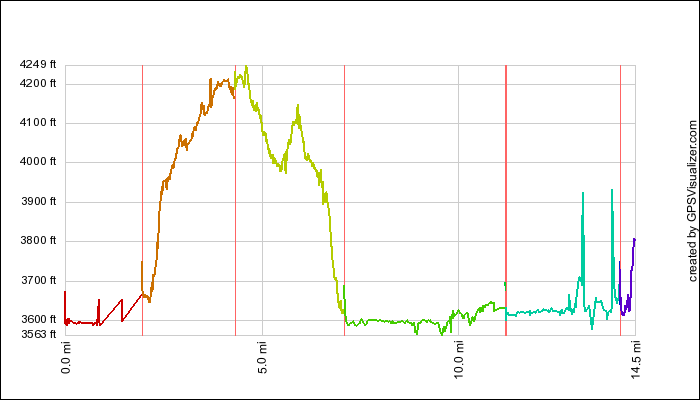
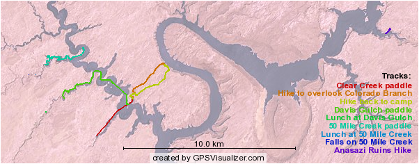

This year for vacation, I did the Hidden Canyons of Lake Powell Rei Adventures trip. The Lake Powell area is quite the beautiful place. The color contrasts between the blues of the lake, the reds of the sand and stone, up to the blues of the sky. The dry emptiness throughout that reminds you that this is a desert, even when standing with your feet in the lake water.
The thing about hiking in canyons, is that you go up and down; a lot. Partly to show how much, and partly just because I have the data and can show it off. (GPS is still so neat.) Here’s a quick graph of the elevation changes. (The rather flat bits are where we kayaked.) 
Here is a map of the trails that we hiked and paddled. The colors match those in the elevation graph. 
Then a nifty google map showing where the photos on the following pages where took.
Brief Summery
- Day 1 — 15 Oct 2007 — Met at Airport, five hour drive to Bullfrog
- Day 2 — 16 Oct 2007 — Houseboat ride to Escalantay branch and base camp
- Day 3 — 17 Oct 2007 — Hike over to overlook of Colorado branch
- Day 4 — 18 Oct 2007 — Kayak and Hike up Davis Gulch
- Day 5 — 19 Oct 2007 — Kayak and Hike up 50 Mile Creek
- Day 6 — 20 Oct 2007 — Pack up camp, check out some ruins, back to marina
- Day 7 — 21 Oct 2007 — Drive back to Salt Lake City, check out Goblins on the way.